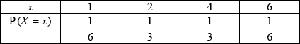

* This question is from an exam for a previous syllabus, and may contain minor differences in marking or structure.
 A1A1
Note: Award A1 for each correct row.
[2 marks]
(M1)
A1
Note: If the probabilities in (a) are not values between 0 and 1 or lead to award M1A0 to correct method using the incorrect probabilities; otherwise allow FT marks.
[2 marks]